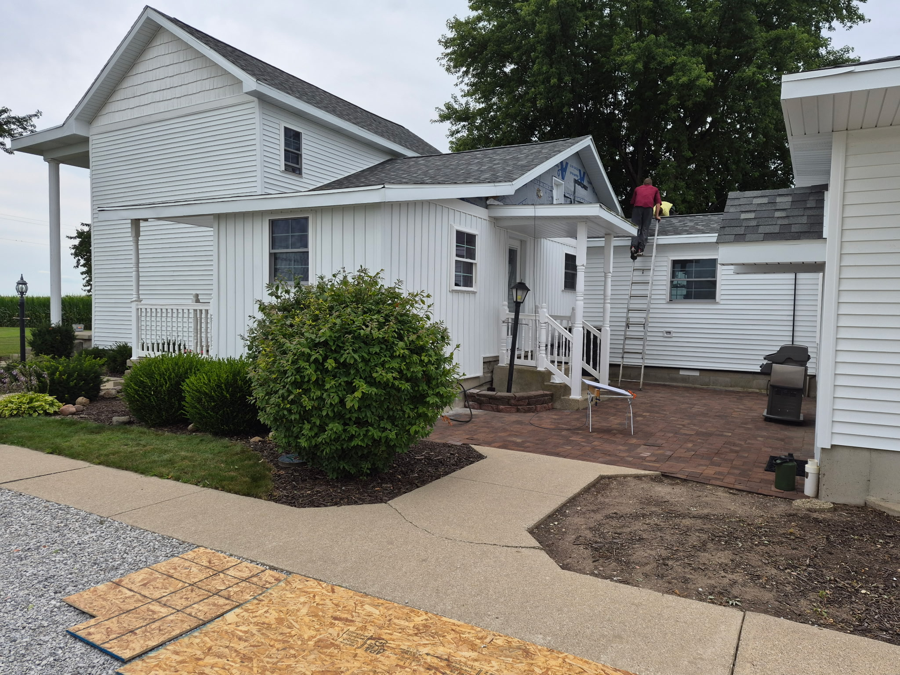
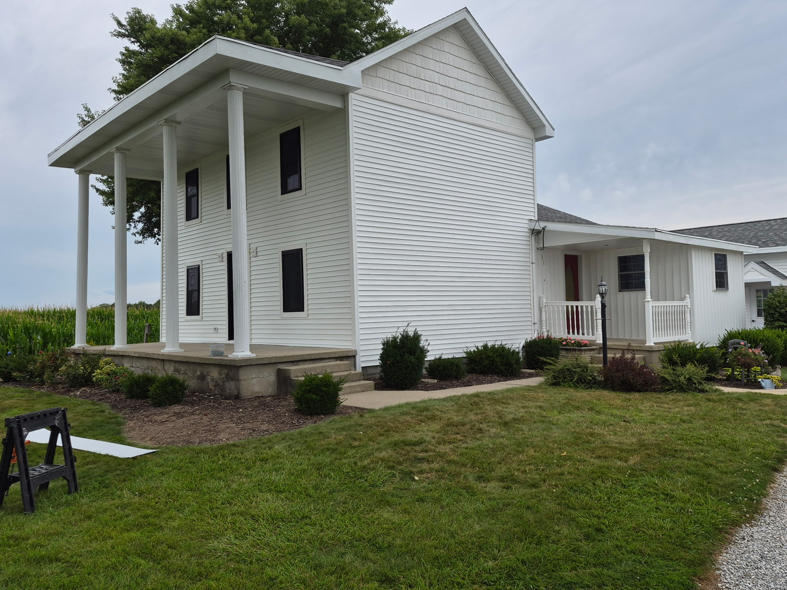
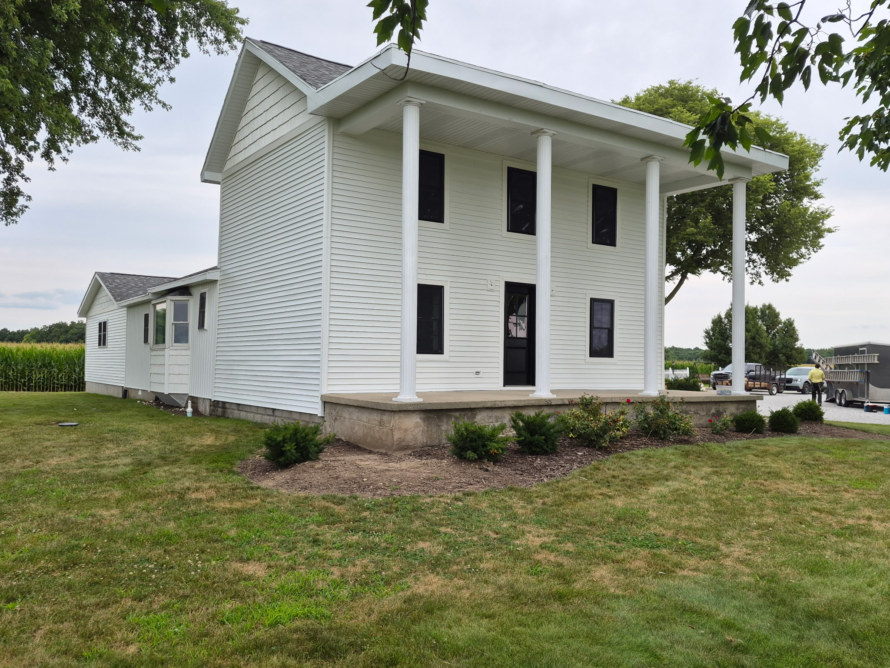
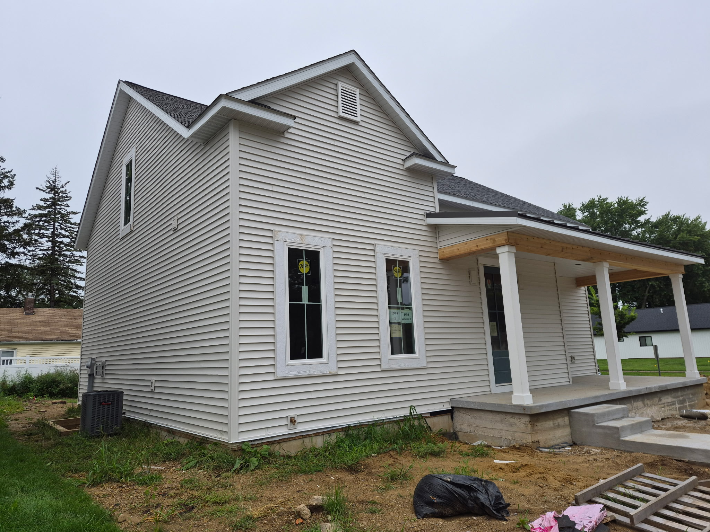
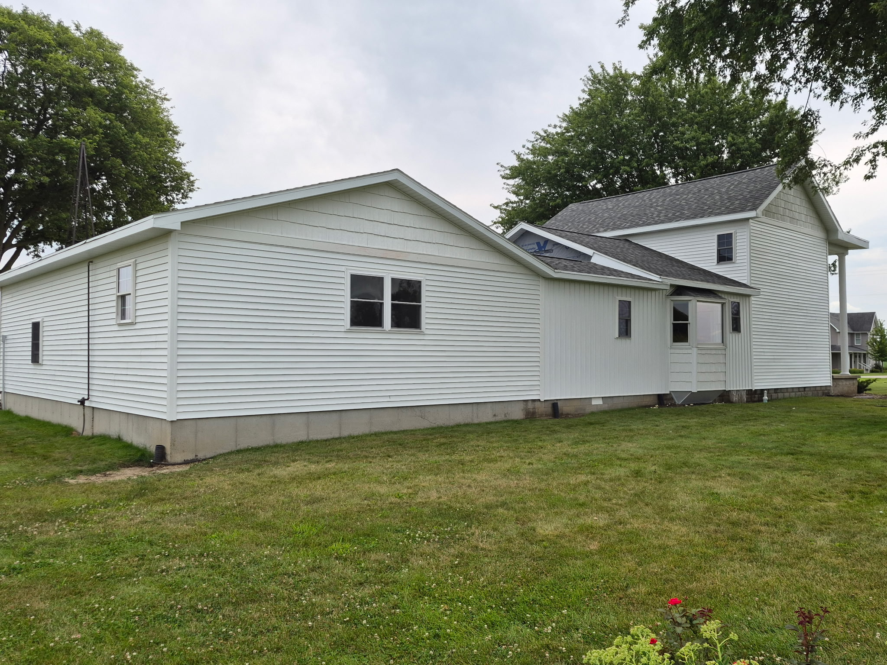
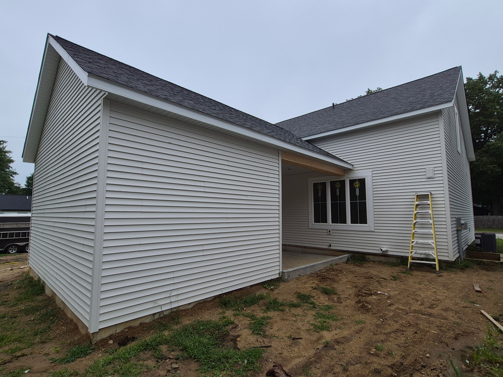
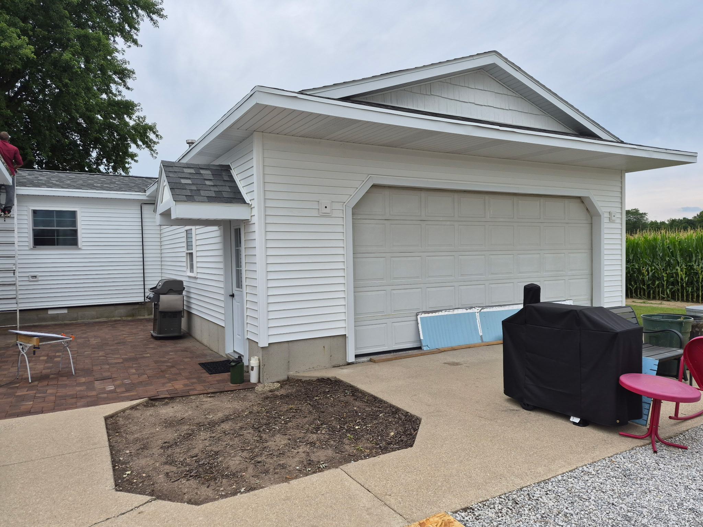

Sunrise Exteriors LLC brings new construction craftsmanship to every siding, window, door, deck, and pole barn job, residential, commercial, or farm.
📞 Call (260) 312-7233Vinyl and Hardie siding installation for residential, commercial, and farm buildings.
Replacement and new-construction window installs.
Entry, patio, storm doors and more.
Built to enjoy the outdoors.
Small pole barns and outbuildings.






Sunrise Exteriors LLC is run by Marvin James out of Harlan, IN. The company got its start about 4 years ago doing new construction work, and has since expanded into siding, windows, doors, decks, and pole barns for residential, commercial, and farm properties.
Free estimates. Call for a quote on your next project.
Yes. Call (260) 312-7233 for a free estimate on your siding, window, door, deck, or pole barn project.
Siding (vinyl and Hardie), windows (replacement and new installs), doors (entry, patio, storm and more), decks, and pole barns and outbuildings.
About 4 years, starting in new construction and now expanding into siding, windows, doors, decks, and pole barns for residential, commercial, and farm properties.
All three. Sunrise Exteriors LLC handles residential, commercial, and farm projects.
Vinyl and Hardie siding, along with other materials depending on the project.
Call or email for a free estimate on your siding, window, door, deck, or pole barn project.